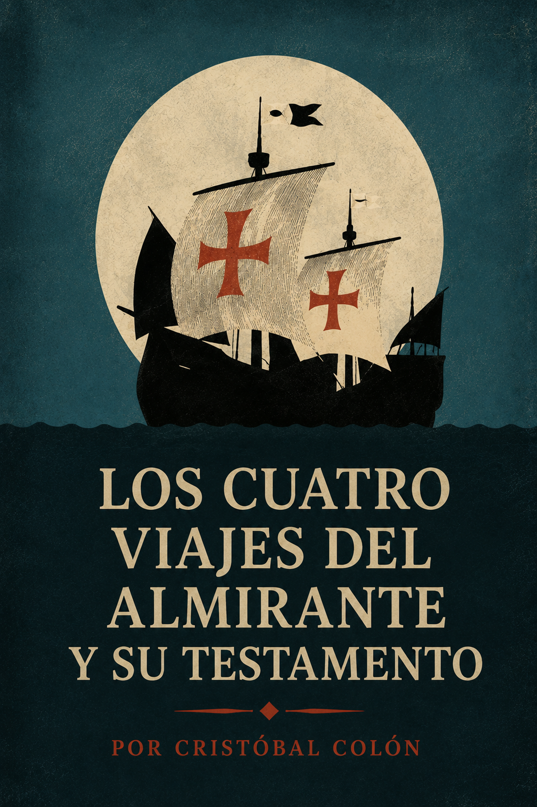
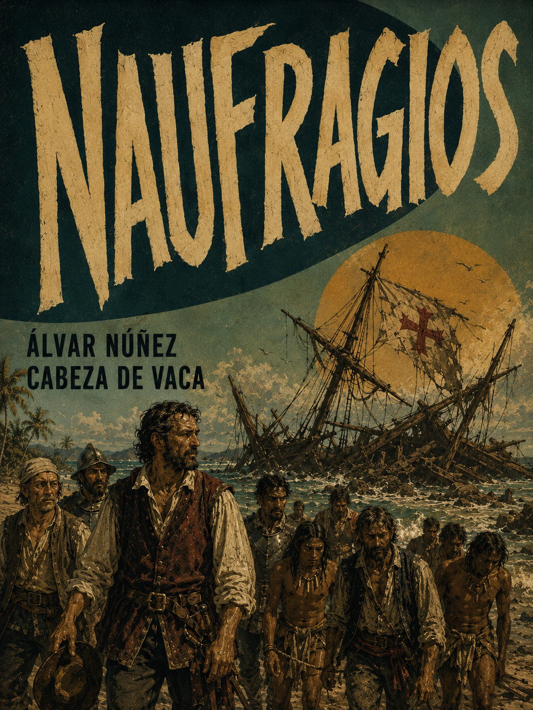

La Celestina
10.0Resumen
Tragicomedia dialogada de finales del siglo XV que sigue la obsesión amorosa de Calisto por Melibea, orquestada por Celestina, la vieja alcahueta que da nombre a la obra. Puente entre el mundo medieval y el renacentista, célebre por su realismo psicológico y su desenlace trágico y moralizante.

Los cuatro viajes del almirante y su testamento
5.9Resumen
Las cartas, diarios de a bordo y el testamento del propio Cristóbal Colón, documentando sus cuatro travesías atlánticas entre 1492 y 1504. Un relato de primera mano —y no poco interesado— del primer contacto con el Caribe y las negociaciones con la Corona que lo hicieron posible.
Brevísima relación de la destrucción de las Indias
8.2Resumen
Denuncia testimonial de Bartolomé de las Casas contra las atrocidades cometidas por los colonizadores españoles en el Caribe y el continente, escrita en 1542 como petición directa a la Corona para reformar el trato a los pueblos indígenas. Un texto tan influyente como controvertido en la formación de la Leyenda Negra española.

Naufragios
9.8Resumen
Álvar Núñez Cabeza de Vaca narra el desastre de la expedición de Pánfilo de Narváez y los ocho años que pasó vagando desnudo y cautivo por las costas y desiertos de lo que hoy es Florida, Texas y el norte de México, sobreviviendo como esclavo, comerciante y curandero entre los pueblos indígenas antes de reencontrar a los suyos en 1536. Publicada en 1542, es tan crónica de supervivencia como confesión de un hombre transformado por el contacto con un mundo que España apenas comenzaba a comprender.
Lazarillo de Tormes
10.0Resumen
Novela picaresca anónima de 1554 que sigue a un niño pobre al servicio de una serie de amos —un ciego mendigo, un cura avaro, un escudero venido a menos— en una sátira mordaz de la hipocresía social del Siglo de Oro. Fundacional por su voz confesional en primera persona, irónica de principio a fin.
Comentarios Reales de los Incas
9.1Resumen
Escrita por el hijo de un conquistador español y una princesa inca, esta crónica de 1609 entreteje la historia oral y la mitología incaicas con el relato de la conquista del Perú. Una de las primeras grandes obras de autoría mestiza, escrita desde ambos mundos a la vez.
Historia de la Monja Alférez
8.8Resumen
La autobiografía de Catalina de Erauso, una monja vasca que escapó de su convento a los quince años, se vistió de hombre y cruzó el Atlántico para reinventarse como soldado en las guerras de conquista de Chile y Perú. Entre duelos, fugas y una identidad que mantuvo oculta durante casi dos décadas, su relato desafía sin proponérselo las categorías de género y santidad de la España imperial, hasta que el Papa mismo le concedió permiso para vivir vestida de hombre el resto de su vida.